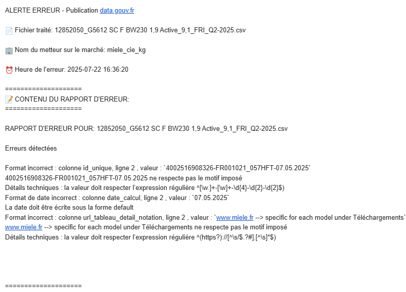

Contexte de la mission
En France, les vendeurs d’électroménager sont légalement tenus de publier les indices de réparabilité et de durabilité de leurs produits sur le site officiel data.gouv.fr. Toutefois, la plateforme actuelle ne propose pas de solution simple et rapide pour effectuer cette tâche, ce qui pousse certains professionnels à externaliser cette démarche.
Objectifs de la Mission
Mon objectif a été d’automatiser l’envoi régulier des indices de réparabilité et de durabilité, afin de :
Principales Réalisations
- Faciliter le respect de la réglementation
- Alléger la charge de travail liée à une saisie manuelle récurrente
- Tests et validation des fonctionnalités développées
- Réduire les erreurs humaines
- Améliorer les délais de traitement
Problématique rencontrée
Au cours de mes recherches, j’ai constaté que la plateforme data.gouv.fr ne propose aucune API publique permettant un dépôt automatisé via des requêtes HTTP standard ou des intégrations classiques. Cela rend les solutions d’automatisation traditionnelles (type webhook ou API REST) inutilisables dans ce contexte.
Solution mise en œuvre
Pour contourner cette limitation, j’ai mis en place une solution d’automatisation via script de navigateur utilisant Selenium. Selenium est un outil permettant d’automatiser les actions d’un utilisateur sur un navigateur web (Chrome, Firefox, etc.), telles que :
- La navigation vers une page
- La connexion à un compte
- Le remplissage de formulaires
- Le téléversement de fichiers
- La validation ou la soumission de données
Ce script reproduit fidèlement le comportement d’un utilisateur humain, mais de façon automatique et répétable ce qui est exactement ce que je recherche.
Architecture technique de la solution
Technologies utilisées
- Python 3.x : Langage de programmation principal
- Selenium WebDriver : Automatisation du navigateur web
- Pandas : Traitement et manipulation des données CSV/Excel
- WebDriver Manager : Gestion automatique des pilotes de navigateur
- Microsoft Edge : Navigateur cible pour l'automatisation
Architecture
Structure du Projet
├── main.py # Script principal
├── requirements.txt # Dépendances Python
├── enterprises_config.json # Configuration dynamique des entreprises
├── input_files/ # Dossier des fichiers sources
├── output_csv/ # Fichiers CSV convertis
└── error_folder/ # Fichiers et logs d'erreurs
Architecture technique de la solution
Déroulement du script
- Le script récupère automatiquement les fichiers reçus par FTP ou par email et les place dans le dossier input_files.
- Pour chaque fichier .XLSM, la macro intégrée est exécutée afin de générer un fichier .CSV. Le fichier source .XLSM est ensuite supprimé et le fichier .CSV est déplacé dans le dossier output_csv.
- Le script lance ensuite le processus d’automatisation pour uploader chaque fichier sur data.gouv.fr, un par un.
- Après un upload réussi, le fichier traité est supprimé et le script passe au suivant.
- En cas d’erreur lors de l’upload, le fichier concerné est déplacé dans le dossier error_folder accompagné d’un fichier .txt contenant le détail de l’erreur affichée sur la plateforme.
Fonctionnalités développées
Conversion automatique de formats :
Objectif :
Cette mission m'a enseigné l'importance de la communication dans les projets collaboratifs et la valeur de la planification rigoureuse. J'ai également découvert ma capacité d'adaptation face aux défis techniques et ma motivation pour résoudre des problèmes complexes.
Fonctionnalités :
- Support de multiples formats d'entrée : `.xlsx`, `.xls`, `.xlsm`, `.csv`
- Conversion automatique vers le format CSV
- Ajout automatique de la date du jour au nom du fichier (`nom_original_YYYY-MM-DD.csv`)
- Suppression automatique des fichiers sources après conversion réussie
- Stockage des fichiers convertis dans le dossier `output_csv/`
Détection automatique des entreprises :
Objectif :
Identifier automatiquement l'entreprise concernée sans intervention manuelle
Fonctionnement :
- Analyse intelligente du nom de fichier pour extraire le nom de l'entreprise
- Nettoyage automatique des mots-clés non pertinents (indice, réparabilité, données, etc.)
- Système de cache avec sauvegarde dans `enterprises_config.json`
- Apprentissage automatique : les nouvelles entreprises détectées sont mémorisées
- Support de différents formats de noms (séparés par `_`, `-`, espaces, etc.)
Exemples de détection :
- `seb_indice_reparabilite_2024.xlsx` → Détecte "SEB"
- `MIELE-durabilite-export.csv` → Détecte "MIELE"
- `nouveau_constructeur_data.xlsx` → Détecte "nouveau_constructeur"
Détection du type d'indice :
Objectif :
Distinguer automatiquement entre indices de réparabilité et de durabilité
Fonctionnement :
- Analyse du nom de fichier pour identifier le type d'indice
- Priorité à la durabilité (plus spécifique) puis réparabilité par défaut
- Support multilingue (français/anglais)
Adaptation automatique :
Adaptation automatique de la sélection du jeu de données correspondant
Mots-clés reconnus :
- Durabilité : "durabilite", "durabilité", "durability", "sustainability"
- Réparabilité : "reparabilite", "réparabilité", "repairability", "repair"
Gestion avancée des erreurs :
Objectif :
Capturer, analyser et documenter tous les problèmes rencontrés
Fonctionnalités :
- Capture automatique des rapports d'erreur de la plateforme data.gouv.fr
- Extraction intelligente des messages d'erreur détaillés
- Sauvegarde automatique des logs d'erreurs avec horodatage
- Déplacement automatique des fichiers problématiques vers `error_folder/`
- Analyse structurée des erreurs VSA (Vue Structure Accordéon)
Processus de gestion d'erreur:
- Détection d'une erreur lors de la validation du fichier
- Clic automatique sur "Voir le rapport d'erreur"
- Extraction du contenu détaillé des erreurs
- Sauvegarde dans `error_folder/nom_fichier_error_log_YYYYMMDD_HHMMSS.txt`
- Déplacement du fichier CSV source vers `error_folder/`
Correspondance intelligente des organisations et jeux de données :
Objectif :
Sélectionner automatiquement la bonne organisation et le bon jeu de données
Fonctionnement :
- Système de scoring pour évaluer la pertinence des correspondances
- Recherche adaptative qui s'ajuste selon le type d'indice détecté
- Gestion des priorités : entreprise + type d'indice, puis type d'indice seul
- Fallback intelligent vers des correspondances partielles
Algorithme de score :
- Correspondance exacte de mots-clés : +20-25 points
- Correspondance partielle : +10-15 points
- Mots-clés spécialisés (réparabilité, durabilité) : +25 points
- Entreprises connues : +15-20 points
Envoie de mail d'alerte en cas d'échec de publication :
Objectif :
Informer les parties prenantes en cas d'échec de la publication des données
Fonctionnement :
- Détection d'un échec de publication
- Envoi automatique d'un email au support
- Contenu de l'email : description précise de l'erreur rencontrée et le nom du fichier concerné
Screen du mail :
Conclusion
Grâce à l’automatisation avec Selenium, j’ai pu publier les indices sur data.gouv.fr sans avoir à le faire manuellement. Même si ce n’est pas la solution idéale (il n’y a pas d’API), ça fonctionne bien et ça répond aux besoins de l’entreprise. Pour l’instant, c’est la meilleure option disponible.